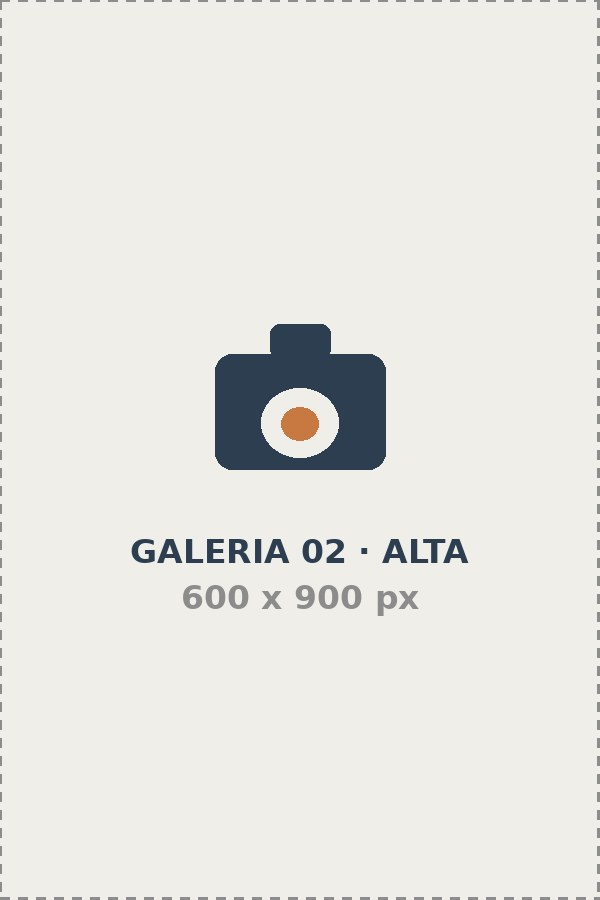
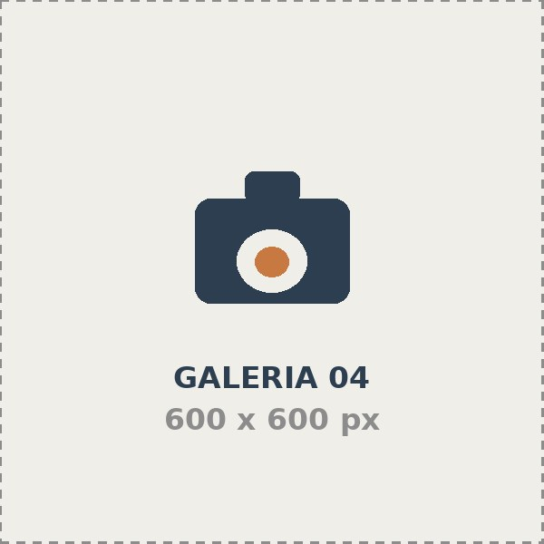

Galería
Una selección que hemos fotografiado entre 2024 y 2026.
480
Sesiones realizadas
13
Años de trayectorias
36
Marcas acompañadas
98%
Volveria a contratarlos
Explorar por categoria
Cada enlace lleva a su sección dentro de esta misma página.
Todo el trabajo






Producto
Catalogos para tiendas en linea y material para redes sociales.
Eventos
Bodas, graduaciones y actividades corporativas.
Le interesa trabajar con nosotros?
Cuentanos que necesita y le responderemos dentro de las siguientes 48 horas habiles.
Solicitar una sesión